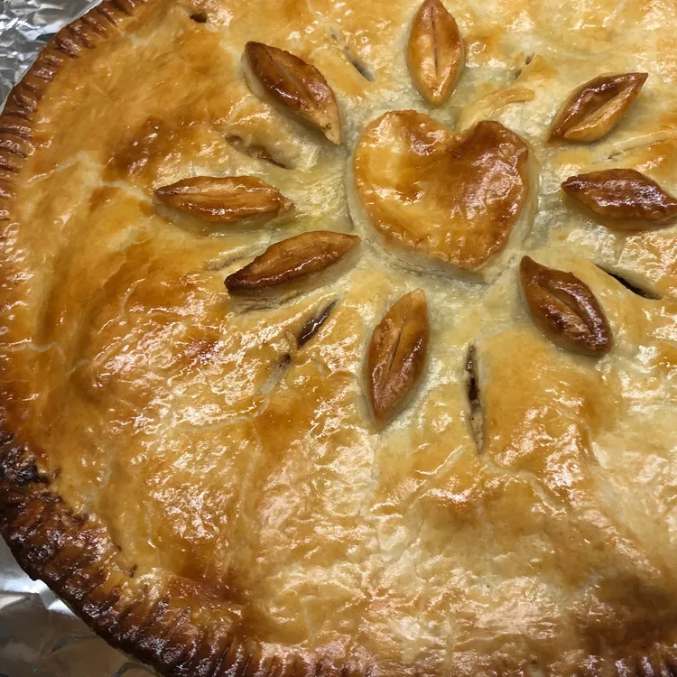

Apple Pie

Description
Nothing is better than a nice and fresh apple pie at cold winter
evening... or a cool apple pie at a hot summer day... or any
other day or night, because apple pies are awesome all the time!
Ingredients
- ¾ cup white sugar
- 2 tablespoons all-purpose flour
- ½ teaspoon ground cinnamon
- ¼ teaspoon ground nutmeg
- ½ teaspoon lemon zest
- 7 cups thinly sliced apples
- 2 teaspoons lemon juice
- 1 tablespoon butter
- 1 recipe pastry for a 9 inch double crust pie
- 4 tablespoons milk (Optional)
Steps
- Preheat oven to 425 degrees F (220 degrees C).
- Mix together the sugar, flour, cinnamon, nutmeg and lemon peel.
- Line one crust in a 9-inch deep-dish pie pan. Layer 1/3 of apples into pie crust. Sprinkle with sugar mixture and repeat until done. Sprinkle with lemon juice and dot with butter.
- Place second pie crust on top of filling and flute the edges. Cut vents in top crust and brush with milk for a glazed appearance if desired.
- Bake at 425 degrees F (220 degrees C) for 40 to 50 minutes.